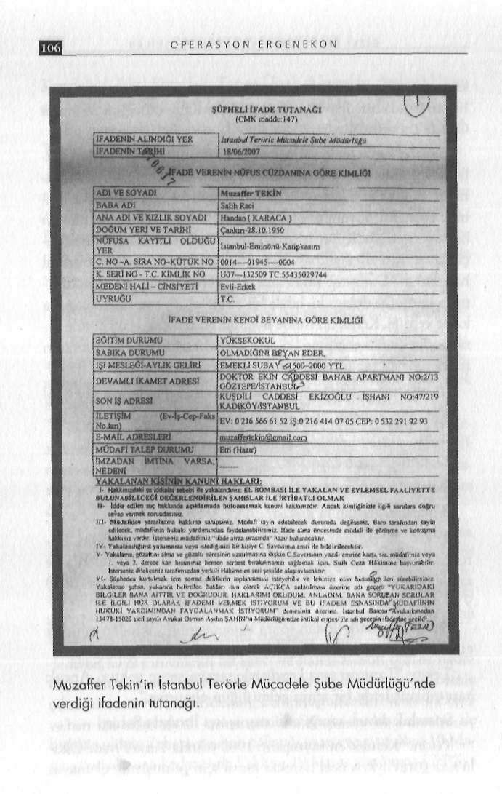

G İ Z L İ B E L G E L E R D E K A R A N L I K İ L İ Ş K İ L E R
Kundakçı, Fikri Karadağ, Taner Ünal, Alparslan Arslan, Hüsekadar İsmail'in evinde kaldım. Buradan ayrıldıktan sonra askeryin Görüm ve Muzaffer Tekin...
liği sırasında astsubaylığa geçişinde yardımcı olduğum Mahmut Bu hareketle Hüseyin Görüm vasıtasıyla tanıştığını anlatan Öztürk'ün evine gittim.
Tekin, o toplantıyı şöyle anlattı:
Sabaha kadar evde yalnızdım, uyur uyanık vaziyetteydim. Sa
"İstanbul'daki ilk tanıtım toplantısına beni de çağırdılar. Bubahleyin uzun süre TV izlemedim. Daha sonra açıp kanalları tarada ilk defa dernek başkanı Taner Ünal ile tanıştım. Alparslan radım. Kanal 7'de gazete başlıkları okunuyordu. Hürriyet'te adı
Arslan'ı o toplantıda gördüğümü hatırlıyorum. Hasan Kundakçı mın geçtiğini duyunca, özel hayatım, Rauf Denktaş tarafından Paşa'nın da derneğin fahri başkanı olduğu lanse edildi. Toplanbana verilen şilt, Kuzey Irak'ta Türk askerlerinin başına çuval getıda önceden tanıdığım emekli kurmay albay Fikri Karadağ da çirilince 'Muzaffer yüzbaşı olsaydı çuval geçirilemezdi' sözlerini vardı."
hatırladım. Danıştay saldırısını gerçekleştirenle irtibatlandırıl-Neden kendini bıçakladı?
mara onuruma dokundu, böyle bir onursuzluğu taşıyamayacağıma karar verdim. Kendi üzerimde bulunan sustalı çakıyı iki elimle tu
Danıştay saldırısını olay günü öğle saatlerinde öğrendiğini, tarak dik olarak göğsüme iki defa sapladım. Ordudan ayrıldıktan akşam da Fenerbahçe Orduevi'nde arkadaşlarıyla yemeğe gittiğisonra ruhsatlı tabanca almadım, tabancam da yoktur."
ni belirten Tekin, kendisinin olayla ilişkilendirildiğini bu yemek Ya ofisinde rastlanan "İstihbarat ve Gerilla Harbi" isimli kitap?
sırasında eşinin telefonu üzerine öğrendiğini söyledi.
Eşinin polislerin arama emriyle eve geldikleri bilgisini verme
Tekin'in cevabı: "Babamdan kalmıştı, hatıra olarak saklısi üzerine "Hemen geliyorum" diyerek ayağa kalktığını ancak yordum."
masada bulunan Zekeriya Oztürk ve İsmail Paker'in "Komuta
Ya fünyesi çıkarılmış MKE yapımı el bombaları?
nım sen otur biz bakarız" dediklerini anlatan Tekin, şöyle devam Tekin: "Süs olarak saklıyordum."
etti:
Alparslan Arslan'la ilişkisi?
"Yaklaşık 2.5-3 saat sonra Zekeriya Oztürk, İsmail Paker, Tekin: "Kendisini tanıyorum ama 1 yıldır görmüyorum. Bü
Avukat Ertaç Giray'la birlikte döndüler. Ertaç Giray telaşlı bir roma 3-4 defa gelmişliği, gitmişliği olmuştur. En son telefonla ne şekilde 'telefonunu kapat, pilini çıkar' dedi. 'Olayla irtibatlandı-zaman görüştüğümü hatırlamıyorum. İfadem sırasında (polisler) rılıyorsun, hakkında yakalama emri var, gidip teslim olup bir iki 9 ay önce görüştüğümü söylediler, doğrudur."
gün gözetime alınırsan rencide olursun, ben seni pazartesi günü kendim götürüp savcıya teslim edeceğim' dedi.
Susurluk skandalından sonra kamuoyunun yakından tanıdığı emekli tuğgeneral Veli Küçük?
Ertaç Giray'ın emekli bir savcı ve halen avukat olması nedeniyle sözüne inandım. Kendisine 'Bu arada hakkımda bir cümle Tekin: "Tanırım ama kendisiyle samimiyetim yoktur. Ancak çıkarsa canıma kıyarım' dedim. Bu konuşmalardan sonra Zekeri-bazı toplantılarda bir araya gelmişliğim olmuştur."
ya'nın bir arkadaşının evine gittim. Sabaha kadar Zekeriya ile Susurluk davası sanığı eski emniyetçi İbrahim Şahin?
birlikte olduk. Zekeriya sabah çalıştığı gazeteye gitti. Ben 18 Ma
Tekin: "Kendisi emniyetçidir. 1982 yılında Tuzla Piyade Okuyıs günü akşama kadar evde kaldım. 19 Mayıs günü saat 17:00'ye lu'nda görevliyken özel harekât kursu için gelmişlerdi. O zaman

GİZLİ BELGELERDE KARANLIK İLİŞKİLER
tanıştık. 1997 yılına kadar zaman zaman görüştük. 1997'den sonra tekrar görüştüğümüzü hatırlamıyorum. Hapishane ve hastane döneminde yanında oldum.
Doğu Perinçek?
Tekin: "Herkes gibi bir siyasi partinin genel başkanı olarak tanıdığım gibi Denktaş'a istanbul'da destek mitingi yapılmıştı, orada kendisiyle yüz yüze görüştüm."
Sık sık telefonla konuştuğu Danıştay davası sanığı Ayhan Parlak?
Tekin: "Ayhan Parlak Avrupa yakasında bulunan bir iş merkezinin satışı konusuyla ilgileniyordu. Bu konuyla ilgili benden yardım istedi. Bu dönemde kendisi beni sık sık aradı. Ayrıca bir akrabasının trafik kazası olayı nedeniyle benden yardım istedi.
Bu nedenlerle aramızda sıkça görüşme oldu."
Ayhan Parlak ile Alparslan Arslan arasındaki telefon görüşmesi?
Tekin: "Telefon görüşmesi yoğunluğu avukat/müvekkil ilişkisinden kaynaklanıyordur."
Almanya'da öldürülen Ertuğrul Yılmazla iş ortaklığı var mı?
Tekin: "Ortaklığım yok. Kardeşi Rıza Yılmaz Doğuş Factoring'de ortaktı."
İcrada tanıştık
1962 Düzce doğumlu Hüseyin Görüm, Muzaffer Tekin'in yakın arkadaşı. O da şüpheli olarak arandı, ilkokul mezunu, 19 ya
şına kadar araba tamircisi olarak çalışan biri. 1981 yılında bir arkadaşını, kendi ifadesine göre kazayla yaralayınca 2 yıl Sağmalcılar Cezaevi'nde hapis yatmış. Cezaevinden sonra eşinin babasına ait ticari takside şoförlük yapan Görüm, 1994'ten itibaren pazarlama işine girmiş. Araba alıp satmış. 2002'de inşaat malzemeleri satan bir şirket kurmuş. Son olarak Kuva-i Milliye Teşkilatı Derneği'nde teşkilat sorumlusu olarak çalışmaya başlamış.